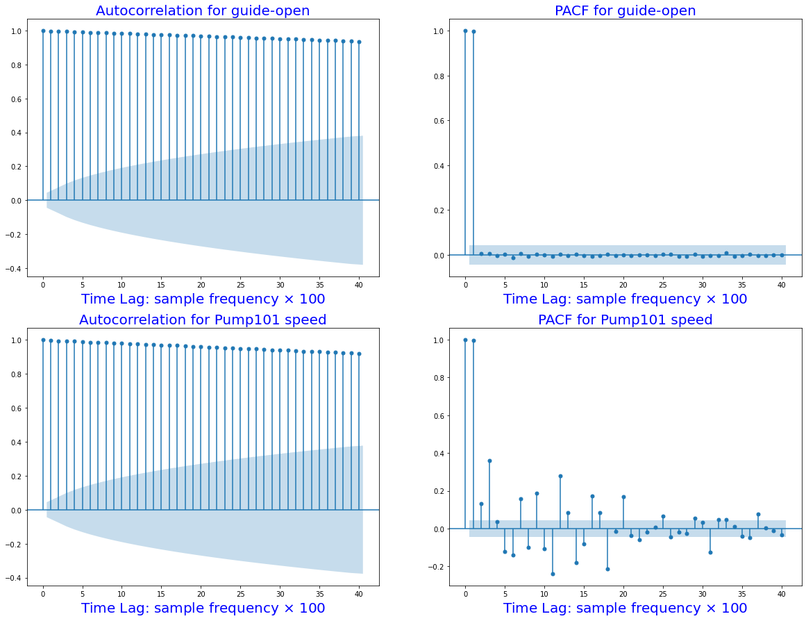
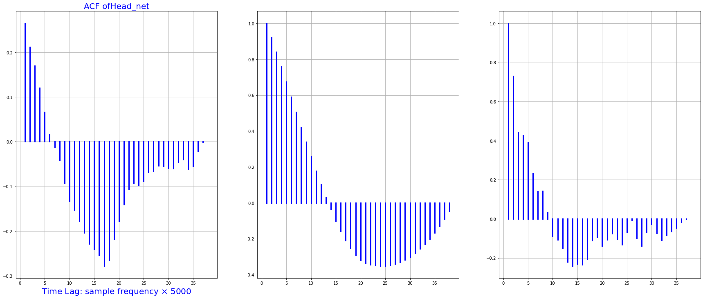
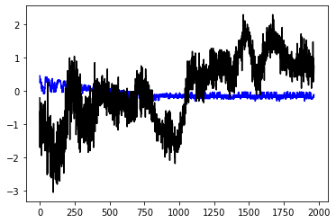
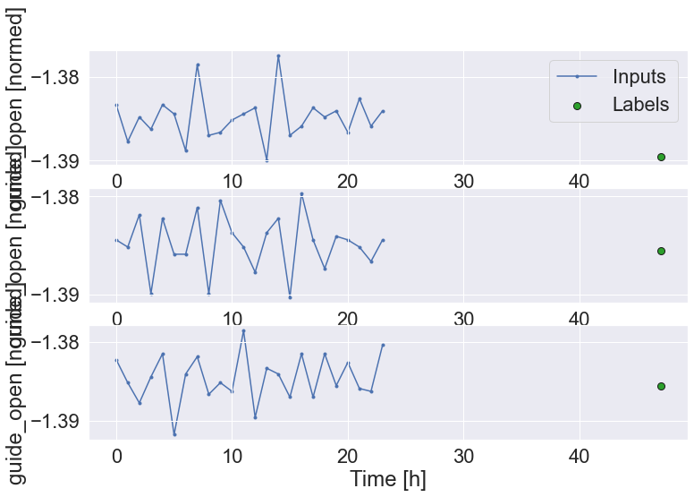

Tensorflow modelling¶
import pandas as pd
import numpy as np
import matplotlib.pyplot as plt
import seaborn as sns
from pandas.plotting import register_matplotlib_converters
# plt.style.use(['science','no-latex'])
# plt.rcParams["font.family"] = "Times New Roman"
%load_ext autoreload
%autoreload 2
import tensorflow as tf
1, Load the data¶
#from tensorflow import keras
#from google.colab import drive
#drive.mount('/content/drive')
#df = pd.read_csv('/content/drive/MyDrive/Data/vattenfall_turbine.csv')
#drive.flush_and_unmount()
#print('NB: Unmount the google cloud driver')
df = pd.read_csv(r'E:\FEM\Python\bitbucket\Vattenfall_rnn\vattenfall_turbine.csv')
keys = df.keys().values
feature_keys = keys[np.arange(1,5).tolist() + np.arange(7,10).tolist()]
time_key = keys[0]
plot_cols = feature_keys[0:len(feature_keys):2]
plot_features = df[plot_cols]
#plot_features.index = df[time_key]
fig1 = plot_features.plot(subplots=True, figsize=(10, 8))
plt.show()
from IPython.display import display, Markdown
#display(Markdown(' <font size="6"><span style="color:blue">**Lets take a close look at the time series.**</span> </font>'))
display(Markdown('<span style="color:blue;font-size:50px">**Lets take a close look at the time series.**</span>'))
plot_features = df[plot_cols][int(len(df)/5):int(len(df)/3):1000]
#plot_features.index = df[time_key][:480]
fig2 = plot_features.plot(subplots=True, figsize=(15, 10))

Lets take a close look at the time series.

2, Preprocessing data: normalize, train, validation, test, etc.¶
2.1, resample the data with low-resolution¶
df_train = df[feature_keys[0:7:2]][int(len(df)/4):int(len(df)/2):100]
display(Markdown('<span style="color:red; font-size:30px">**No. of the values in the training dataset is: %d**</span>' %len(df_train)))
# plot the data and check their variations along time
df_train.plot(subplots=True, figsize=(15, 10))
plt.show()
#print('No. of the values in the training dataset is: %d' %len(df_train))
display(Markdown('<span style="color:blue; font-size:20px">**Plot the heatmap for variation of standard deviation**</span>'))
# check he correlation
import seaborn as sns
plt.figure(figsize=(12, 6))
sns.heatmap(df_train.corr(), annot=True, fmt=".2f")
plt.show()
No. of the values in the training dataset is: 1967

Plot the heatmap for variation of standard deviation

from mpl_toolkits.axes_grid1 import make_axes_locatable
from matplotlib import colors, ticker, cm
fig = plt.figure(figsize=(30, 10))
fig.add_subplot(131)
plt.hist2d(df['head_gross'], df['guide_open'], bins=(25, 25))
plt.xlabel('head_gross', size=20)
plt.ylabel('guide_open', size=20)
plt.colorbar()
fig.add_subplot(132)
plt.hist2d(df['head_gross'], df['pump101_speed'], bins=(25, 25))
plt.xlabel('head_gross', size=20)
plt.ylabel('pump101_speed', size=20)
plt.colorbar()
fig.add_subplot(133)
plt.hist2d(df['head_gross'], df['discharge_rate'], bins=(50, 50))
plt.xlabel('head_gross', size=20)
plt.ylabel('discharge_rate', size=20)
plt.colorbar()
<matplotlib.colorbar.Colorbar at 0x214b727e3a0>

features = df.keys()
features
Index(['time', 'guide_open', 'running_speed', 'pump101_speed', 'pump102_speed',
'pump101_set', 'pump102_set', 'head_net', 'head_gross',
'discharge_rate', 'unknow_Hg', 'unknow_Hst', 'unknow_Qt',
'unknown_Pabs'],
dtype='object')
2.2, autocorrelation function (ACF) and (PACF) to check time dependence¶
def autocorr(x):
result = np.correlate(x, x, mode='full')
return result[int(result.size/2):]
acf_open = autocorr(df_train.guide_open)
from statsmodels.graphics.tsaplots import plot_acf
import statsmodels.api as sm
fig, ax = plt.subplots(2,2,figsize=(20,15))
sm.graphics.tsa.plot_acf(df_train.guide_open.squeeze(), lags=40, ax=ax[0,0])
ax[0,0].set_title("Autocorrelation for guide-open", fontsize=20, color='blue')
ax[0,0].set_xlabel(r'Time Lag: sample frequency $\times$ 100', fontsize=20, color='blue')
sm.graphics.tsa.plot_pacf(df_train.guide_open.squeeze(), lags=40, ax=ax[0, 1])
ax[0,1].set_title("PACF for guide-open", fontsize=20, color='blue')
ax[0,1].set_xlabel(r'Time Lag: sample frequency $\times$ 100', fontsize=20, color='blue')
sm.graphics.tsa.plot_acf(df_train.pump101_speed.squeeze(), lags=40, ax=ax[1,0])
ax[1,0].set_title("Autocorrelation for Pump101 speed", fontsize=20, color='blue')
ax[1,0].set_xlabel(r'Time Lag: sample frequency $\times$ 100', fontsize=20, color='blue')
sm.graphics.tsa.plot_pacf(df_train.pump101_speed.squeeze(), lags=40, ax=ax[1,1])
ax[1,1].set_title("PACF for Pump101 speed", fontsize=20, color='blue')
ax[1,1].set_xlabel(r'Time Lag: sample frequency $\times$ 100', fontsize=20, color='blue')
plt.show()

2.3 crossing autocorrelationship for various parameters¶
# NB: we have resampled the data for the autocorreltion analysis
import statsmodels.tsa.stattools as smt
xacf = smt.ccf(df_train.guide_open.squeeze()[0:1900:50], df_train.head_net.squeeze()[0:1900:50], adjusted=False)
acf1 = smt.ccf(df_train.guide_open.squeeze()[0:1900:50], df_train.guide_open.squeeze()[0:1900:50], adjusted=False)
acf2 = smt.ccf(df_train.head_net.squeeze()[0:1900:50], df_train.head_net.squeeze()[0:1900:50], adjusted=False)
fig, [ax1, ax2, ax3] = plt.subplots(1, 3, sharex=True, figsize=(30,12))
i = 1
for p in xacf:
x = [i, i]
ax1.plot([i, i], [0, p], 'b', linewidth=3)
i= i + 1
ax1.grid(True)
ax1.set_title("Cross ACF between guide-open and Head_net", fontsize=20, color='blue')
ax1.set_xlabel(r'Time Lag: sample frequency $\times$ 5000', fontsize=20, color='blue')
i = 1
for p in acf1:
x = [i, i]
ax2.plot([i, i], [0, p], 'b', linewidth=3)
i= i + 1
ax2.grid(True)
ax2.set_title("ACF of guide-open signal", fontsize=20, color='blue')
ax2.set_xlabel(r'Time Lag: sample frequency $\times$ 5000', fontsize=20, color='blue')
i = 1
for p in acf2:
x = [i, i]
ax3.plot([i, i], [0, p], 'b', linewidth=3)
i= i + 1
ax3.grid(True)
ax3.set_title("ACF ofHead_net", fontsize=20, color='blue')
ax3.set_xlabel(r'Time Lag: sample frequency $\times$ 5000', fontsize=20, color='blue')
plt.show()

# Autocorrelation between guide_opan and pump101_speed
xacf = smt.ccf(df_train.guide_open.squeeze()[0:1900:50], df_train.pump101_speed.squeeze()[0:1900:50], adjusted=False)
acf1 = smt.ccf(df_train.guide_open.squeeze()[0:1900:50], df_train.guide_open.squeeze()[0:1900:50], adjusted=False)
acf2 = smt.ccf(df_train.pump101_speed.squeeze()[0:1900:50], df_train.pump101_speed.squeeze()[0:1900:50], adjusted=False)
fig, [ax1, ax2, ax3] = plt.subplots(1, 3, sharex=True, figsize=(30,12))
i = 1
for p in xacf:
x = [i, i]
ax1.plot([i, i], [0, p], 'b', linewidth=3)
i= i + 1
ax1.grid(True)
ax1.set_title("Cross ACF between guide-open and pump101_speed", fontsize=20, color='blue')
ax1.set_xlabel(r'Time Lag: sample frequency $\times$ 5000', fontsize=20, color='blue')
i = 1
for p in acf1:
x = [i, i]
ax2.plot([i, i], [0, p], 'b', linewidth=3)
i= i + 1
ax2.grid(True)
ax2.set_title("ACF of guide-open signal", fontsize=20, color='blue')
ax2.set_xlabel(r'Time Lag: sample frequency $\times$ 5000', fontsize=20, color='blue')
i = 1
for p in acf2:
x = [i, i]
ax3.plot([i, i], [0, p], 'b', linewidth=3)
i= i + 1
ax3.grid(True)
ax3.set_title("ACF of pump101_speed signal", fontsize=20, color='blue')
ax3.set_xlabel(r'Time Lag: sample frequency $\times$ 5000', fontsize=20, color='blue')
plt.show()

2.4, normalize the data¶
# First, we assume all data are used for the training (the time series is not that stationary for the prediction)
df_train_mean = df_train.mean()
df_train_std = df_train.std()
train_df = (df_train-df_train_mean) / df_train_std
fig2 = train_df.plot(subplots=True,figsize=(15,10))
# Second, plot the standand deviation of features within this dataframe
df_std = train_df.melt(var_name='Column', value_name='Normalized')
plt.figure(figsize=(12, 6))
ax = sns.violinplot(x='Column', y='Normalized', data=df_std)
fig3 = ax.set_xticklabels(train_df.keys(), rotation=90)


# tf.convert_to_tensor(new_df)
new_df = train_df.reset_index(drop=True)
target = new_df.pop('guide_open')
#new_df.head()
target.head()
new_df = tf.convert_to_tensor(new_df)
#normalizer = tf.keras.layers.Normalization(axis=-1)
#normalizer.adapt(numeric_features)
feature_keys
array(['guide_open', 'running_speed', 'pump101_speed', 'pump102_speed',
'head_net', 'head_gross', 'discharge_rate'], dtype=object)
3, RNN deep learning to build the model by three different approaches.¶
1. normal deep learning network
2. RNN
3. ARIMA model
3.1, First attemp to the model \(Head\_net_t = f(guide\_open_{(t-1, t-2, ...)}, pump\_speed_{(t-1, t-2, ...)}, discharge\_rate_{(t-1, t-2, ...)},...)\)¶
df_train = df[feature_keys][int(len(df)/4):int(len(df)/2):100]
df_train = df_train.reset_index(drop=True)
#df_train.pop('time')
df_train.pop('head_net')
df_target = df_train.pop('head_gross')
df_train.head()
| guide_open | running_speed | pump101_speed | pump102_speed | discharge_rate | |
|---|---|---|---|---|---|
| 0 | 10.258026 | 883.147506 | 424.766713 | 423.792913 | 0.175680 |
| 1 | 10.220808 | 883.147506 | 424.633645 | 424.918785 | 0.176028 |
| 2 | 10.313853 | 882.934738 | 423.968301 | 425.084355 | 0.176227 |
| 3 | 10.302687 | 883.041122 | 424.567110 | 424.422077 | 0.176376 |
| 4 | 10.354793 | 883.041122 | 424.866515 | 424.157165 | 0.176774 |
# Pre-normalize the features for ML analysis
norm = tf.keras.layers.Normalization(axis=-1)
norm.adapt(df_train)
tf_train = norm(df_train)
# normalize the target (output)
norm_target = tf.keras.layers.Normalization(axis=None)
norm_target.adapt(df_target)
tf_target = norm_target(df_target)
# configure the model
BATCH_SIZE = 500
def get_basic_model():
model = tf.keras.Sequential([
norm,
tf.keras.layers.Dense(50, activation='relu'),
tf.keras.layers.Dense(50, activation='relu'),
tf.keras.layers.Dense(1)
])
model.compile(optimizer='adam',
loss=tf.keras.losses.BinaryCrossentropy(from_logits=True),
metrics=['accuracy'])
return model
model = get_basic_model()
model.fit(tf_train, tf_target, epochs=10, batch_size=BATCH_SIZE)
Epoch 1/10
4/4 [==============================] - 1s 4ms/step - loss: 2848.4448 - accuracy: 0.0000e+00
Epoch 2/10
4/4 [==============================] - 0s 4ms/step - loss: 2181.9502 - accuracy: 0.0000e+00
Epoch 3/10
4/4 [==============================] - 0s 4ms/step - loss: 1536.2311 - accuracy: 0.0000e+00
Epoch 4/10
4/4 [==============================] - 0s 4ms/step - loss: 934.1426 - accuracy: 0.0000e+00
Epoch 5/10
4/4 [==============================] - 0s 4ms/step - loss: 412.7400 - accuracy: 0.0000e+00
Epoch 6/10
4/4 [==============================] - 0s 5ms/step - loss: 13.3311 - accuracy: 0.0000e+00
Epoch 7/10
4/4 [==============================] - 0s 5ms/step - loss: 3.4299 - accuracy: 0.0000e+00
Epoch 8/10
4/4 [==============================] - 0s 4ms/step - loss: 2.8673 - accuracy: 0.0000e+00
Epoch 9/10
4/4 [==============================] - 0s 4ms/step - loss: -0.2837 - accuracy: 0.0000e+00
Epoch 10/10
4/4 [==============================] - 0s 4ms/step - loss: 0.1623 - accuracy: 0.0000e+00
<keras.callbacks.History at 0x214b75b4790>
plt.plot(model.predict(df_train),'b')
plt.plot(tf_target,'k')
plt.show()

norm1 = tf.keras.layers.Normalization(axis =-1)
norm1.adapt(df_train)
tf_train = norm1(df_train)
norm2 = tf.keras.layers.Normalization(axis = None)
norm2.adapt(df_target)
tf_target= norm2(df_target)
dataset_df = tf.data.Dataset.from_tensor_slices((tf_train, tf_target))
dataset_batches = dataset_df.shuffle(100).batch(BATCH_SIZE)
model = get_basic_model()
model.fit(dataset_batches, epochs=10)
Epoch 1/10
4/4 [==============================] - 0s 6ms/step - loss: 1200.5618 - accuracy: 0.0000e+00
Epoch 2/10
4/4 [==============================] - 0s 5ms/step - loss: 789.3683 - accuracy: 0.0000e+00
Epoch 3/10
4/4 [==============================] - 0s 5ms/step - loss: 416.6983 - accuracy: 0.0000e+00
Epoch 4/10
4/4 [==============================] - 0s 5ms/step - loss: 107.9802 - accuracy: 0.0000e+00
Epoch 5/10
4/4 [==============================] - 0s 5ms/step - loss: 45.6023 - accuracy: 0.0000e+00
Epoch 6/10
4/4 [==============================] - 0s 5ms/step - loss: 29.0022 - accuracy: 0.0000e+00
Epoch 7/10
4/4 [==============================] - 0s 5ms/step - loss: 17.4580 - accuracy: 0.0000e+00
Epoch 8/10
4/4 [==============================] - 0s 6ms/step - loss: 11.7437 - accuracy: 0.0000e+00
Epoch 9/10
4/4 [==============================] - 0s 6ms/step - loss: 7.8442 - accuracy: 0.0000e+00
Epoch 10/10
4/4 [==============================] - 0s 5ms/step - loss: 5.2152 - accuracy: 0.0000e+00
<keras.callbacks.History at 0x214b85a8b50>
3.2, Understand datastructure of the tensorflow package –> formulate rolling windowed dataset –> for model in Section 4¶
# split the time series of data into train (70%), test (20%) and validation (10%)
#n = len(df_train)
df_train = df[feature_keys]
df_train.pop('head_net')
df_train.pop('discharge_rate')
n = len(df_train)
# start to divide them
train_df = df_train[0:int(n*0.7)]
test_df = df_train[int(n*0.7):int(n*0.9)]
val_df = df_train[int(n*0.9):]
df_train.shape[1]
## Tensorflow dataset donot have buildin functions to estimate the mean and standard deviation
#normalizer = tf.keras.layers.Normalization(axis=-1)
#normalizer.adapt(train_df)
#train_df = normalizer(train_df)
train_mean = train_df.mean()
train_std = train_df.std()
train_df = (train_df - train_mean)/train_std
test_df = (test_df - train_mean)/train_std
val_df = (val_df - train_mean)/train_std
df_std = (df_train - train_mean) / train_std
df_std = df_std.melt(var_name='Column', value_name='Normalized')
fig, ax = plt.subplots(figsize=[20, 10])
ax = sns.violinplot(x='Column', y='Normalized', data=df_std)
ax.set_xticklabels(ax.get_xticks(), size = 30)
ax.set_yticklabels(ax.get_yticks(), size = 30)
<ipython-input-18-bf96d0c125a6>:31: UserWarning: FixedFormatter should only be used together with FixedLocator
ax.set_yticklabels(ax.get_yticks(), size = 30)
[Text(0, -6.0, '-6.0'),
Text(0, -4.0, '-4.0'),
Text(0, -2.0, '-2.0'),
Text(0, 0.0, '0.0'),
Text(0, 2.0, '2.0'),
Text(0, 4.0, '4.0')]
3.3, get the rolling/windowed dataset¶
# 3.3.1, Indexes and offsets
## NB: the data for training, testing and validation should be store here first!!
class WindowGenerator():
def __init__(self, input_width, label_width, shift,
train_df=train_df, val_df=val_df, test_df=test_df,
label_columns=None):
# Store the raw data.
self.train_df = train_df
self.val_df = val_df
self.test_df = test_df
# Work out the label column indices.
self.label_columns = label_columns
if label_columns is not None:
self.label_columns_indices = {name: i for i, name in
enumerate(label_columns)}
self.column_indices = {name: i for i, name in
enumerate(train_df.columns)}
# Work out the window parameters.
self.input_width = input_width
self.label_width = label_width
self.shift = shift
self.total_window_size = input_width + shift
self.input_slice = slice(0, input_width)
self.input_indices = np.arange(self.total_window_size)[self.input_slice]
self.label_start = self.total_window_size - self.label_width
self.labels_slice = slice(self.label_start, None)
self.label_indices = np.arange(self.total_window_size)[self.labels_slice]
def __repr__(self):
return '\n'.join([
f'Total window size: {self.total_window_size}',
f'Input indices: {self.input_indices}',
f'Label indices: {self.label_indices}',
f'Label column name(s): {self.label_columns}'])
# 3.3.2, Split the window
def split_window(self, features):
inputs = features[:, self.input_slice, :]
labels = features[:, self.labels_slice, :]
if self.label_columns is not None:
labels = tf.stack(
[labels[:, :, self.column_indices[name]] for name in self.label_columns],
axis=-1)
# Slicing doesn't preserve static shape information, so set the shapes
# manually. This way the `tf.data.Datasets` are easier to inspect.
inputs.set_shape([None, self.input_width, None])
labels.set_shape([None, self.label_width, None])
return inputs, labels
WindowGenerator.split_window = split_window
# 3.3.3, plot the time series
def plot(self, model=None, plot_col='head_gross', max_subplots=3):
inputs, labels = self.example
plt.figure(figsize=(12, 8))
plot_col_index = self.column_indices[plot_col]
max_n = min(max_subplots, len(inputs))
for n in range(max_n):
plt.subplot(max_n, 1, n+1)
plt.ylabel(f'{plot_col} [normed]')
plt.plot(self.input_indices, inputs[n, :, plot_col_index],
label='Inputs', marker='.', zorder=-10)
if self.label_columns:
label_col_index = self.label_columns_indices.get(plot_col, None)
else:
label_col_index = plot_col_index
if label_col_index is None:
continue
plt.scatter(self.label_indices, labels[n, :, label_col_index],
edgecolors='k', label='Labels', c='#2ca02c', s=64)
if model is not None:
predictions = model(inputs)
plt.scatter(self.label_indices, predictions[n, :, label_col_index],
marker='X', edgecolors='k', label='Predictions',
c='#ff7f0e', s=64)
if n == 0:
plt.legend()
plt.xlabel('Time [minisecond]')
WindowGenerator.plot = plot
# Test of windowed dataset
#w0 = WindowGenerator(input_width=24, label_width=1, shift=24, label_columns=['head_gross'])
w1 = WindowGenerator(input_width=24, label_width=1, shift=24, label_columns=None)
w=w1
# Stack three slices, the length of the total window.
example_window = tf.stack([np.array(train_df[:w.total_window_size]),
np.array(train_df[100:100+w.total_window_size]),
np.array(train_df[200:200+w.total_window_size])])
example_inputs, example_labels = w.split_window(example_window)
print('All shapes are: (batch, time, features)')
print(f'Window shape: {example_window.shape}')
print(f'Inputs shape: {example_inputs.shape}')
print(f'Labels shape: {example_labels.shape}')
All shapes are: (batch, time, features)
Window shape: (3, 48, 5)
Inputs shape: (3, 24, 5)
Labels shape: (3, 1, 5)
w.example = example_inputs, example_labels
w.plot(plot_col='guide_open')

3.4, Create tf.data.Datasets¶
def make_dataset(self, data):
data = np.array(data, dtype=np.float32)
ds = tf.keras.preprocessing.timeseries_dataset_from_array(
data=data,
targets=None,
sequence_length=self.total_window_size,
sequence_stride=1,
shuffle=True,
batch_size=32,)
ds = ds.map(self.split_window)
return ds
WindowGenerator.make_dataset = make_dataset
# add properties to the dataset
@property
def train(self):
return self.make_dataset(self.train_df)
@property
def val(self):
return self.make_dataset(self.val_df)
@property
def test(self):
return self.make_dataset(self.test_df)
@property
def example(self):
"""Get and cache an example batch of `inputs, labels` for plotting."""
result = getattr(self, '_example', None)
if result is None:
# No example batch was found, so get one from the `.train` dataset
result = next(iter(self.train))
# And cache it for next time
self._example = result
return result
WindowGenerator.train = train
WindowGenerator.val = val
WindowGenerator.test = test
WindowGenerator.example = example
# Run the example to get the index
for example_inputs, example_labels in w.train.take(1):
print(f'Inputs shape (batch, time, features): {example_inputs.shape}')
print(f'Labels shape (batch, time, features): {example_labels.shape}')
Inputs shape (batch, time, features): (32, 24, 5)
Labels shape (batch, time, features): (32, 1, 5)
for example_inputs, example_labels in w.train.take(1):
print(f'Inputs shape (batch, time, features): {example_inputs.shape}')
print(f'Labels shape (batch, time, features): {example_labels.shape}')
Inputs shape (batch, time, features): (32, 24, 5)
Labels shape (batch, time, features): (32, 1, 5)
4, Preliminary model construction¶
4.1, single step model (similar as the conventional independent ML methods)¶
Test 1: single output window¶
# Get the first dataset (all features as output)
single_step_window = WindowGenerator(
input_width=1, label_width=1, shift=1,
label_columns=['head_gross']) # we can set "label_columns=None"
single_step_window
for example_inputs, example_labels in single_step_window.train.take(1):
print(f'Inputs shape (batch, time, features): {example_inputs.shape}')
print(f'Labels shape (batch, time, features): {example_labels.shape}')
single_step_window.label_columns, single_step_window.column_indices
Inputs shape (batch, time, features): (32, 1, 5)
Labels shape (batch, time, features): (32, 1, 1)
(['head_gross'],
{'guide_open': 0,
'running_speed': 1,
'pump101_speed': 2,
'pump102_speed': 3,
'head_gross': 4})
# Baseline model
class Baseline(tf.keras.Model):
def __init__(self, label_index=None):
super().__init__()
self.label_index = label_index
def call(self, inputs):
if self.label_index is None:
return inputs
result = inputs[:, :, self.label_index]
return result[:, :, tf.newaxis]
# Build the model
#baseline = Baseline(label_index=single_step_window.column_indices['head_gross'])
baseline = Baseline(label_index=None)
baseline.compile(loss=tf.losses.MeanSquaredError(),
metrics=[tf.metrics.MeanAbsoluteError()])
val_performance = {}
performance = {}
val_performance['Baseline'] = baseline.evaluate(single_step_window.val)
performance['Baseline'] = baseline.evaluate(single_step_window.test, verbose=0)
2458/2458 [==============================] - 6s 2ms/step - loss: 3.5710 - mean_absolute_error: 1.6346
Test 2: wide output window¶
wide_window = WindowGenerator(
input_width=300, label_width=300, shift=2,
label_columns=None) #['head_gross']) ################# NB: it is very important to choose the parameters here ##############
###################################################################################################################################
wide_window
print('Input shape:', wide_window.example[0].shape)
print('Output shape:', baseline(wide_window.example[0]).shape)
wide_window.plot(baseline)
Input shape: (32, 300, 5)
Output shape: (32, 300, 5)
4, Model construction¶
tf.keras.backend.clear_session()
model = tf.keras.models.Sequential([tf.keras.layers.Conv1D(filters=32, kernel_size = 5, strides=1, padding="causal", activation="relu", input_shape=[None, 1]),
tf.keras.layers.LSTM(60, return_sequences=True),
tf.keras.layers.LSTM(60, return_sequences=True),
tf.keras.layers.Dense(30, activation="relu"),
tf.keras.layers.Dense(10, activation ="relu"),
tf.keras.layers.Dense(1),
tf.keras.layers.Lambda(lambda x: x * 400)
])
#input_shape=[None, 1]
#model.build(input_shape)
---------------------------------------------------------------------------
NotImplementedError Traceback (most recent call last)
~\AppData\Local\Temp/ipykernel_26960/2288807282.py in <module>
1 tf.keras.backend.clear_session()
2
----> 3 model = tf.keras.models.Sequential([tf.keras.layers.Conv1D(filters=32, kernel_size = 5, strides=1, padding="causal", activation="relu", input_shape=[None, 1]),
4 tf.keras.layers.LSTM(60, return_sequences=True),
5 tf.keras.layers.LSTM(60, return_sequences=True),
C:\Users\Public\programs\Anaconda3\lib\site-packages\tensorflow\python\training\tracking\base.py in _method_wrapper(self, *args, **kwargs)
455 self._self_setattr_tracking = False # pylint: disable=protected-access
456 try:
--> 457 result = method(self, *args, **kwargs)
458 finally:
459 self._self_setattr_tracking = previous_value # pylint: disable=protected-access
C:\Users\Public\programs\Anaconda3\lib\site-packages\tensorflow\python\keras\engine\sequential.py in __init__(self, layers, name)
140 layers = [layers]
141 for layer in layers:
--> 142 self.add(layer)
143
144 @property
C:\Users\Public\programs\Anaconda3\lib\site-packages\tensorflow\python\training\tracking\base.py in _method_wrapper(self, *args, **kwargs)
455 self._self_setattr_tracking = False # pylint: disable=protected-access
456 try:
--> 457 result = method(self, *args, **kwargs)
458 finally:
459 self._self_setattr_tracking = previous_value # pylint: disable=protected-access
C:\Users\Public\programs\Anaconda3\lib\site-packages\tensorflow\python\keras\engine\sequential.py in add(self, layer)
219 # If the model is being built continuously on top of an input layer:
220 # refresh its output.
--> 221 output_tensor = layer(self.outputs[0])
222 if len(nest.flatten(output_tensor)) != 1:
223 raise ValueError(SINGLE_LAYER_OUTPUT_ERROR_MSG)
C:\Users\Public\programs\Anaconda3\lib\site-packages\tensorflow\python\keras\layers\recurrent.py in __call__(self, inputs, initial_state, constants, **kwargs)
661
662 if initial_state is None and constants is None:
--> 663 return super(RNN, self).__call__(inputs, **kwargs)
664
665 # If any of `initial_state` or `constants` are specified and are Keras
C:\Users\Public\programs\Anaconda3\lib\site-packages\tensorflow\python\keras\engine\base_layer.py in __call__(self, *args, **kwargs)
923 # >> model = tf.keras.Model(inputs, outputs)
924 if _in_functional_construction_mode(self, inputs, args, kwargs, input_list):
--> 925 return self._functional_construction_call(inputs, args, kwargs,
926 input_list)
927
C:\Users\Public\programs\Anaconda3\lib\site-packages\tensorflow\python\keras\engine\base_layer.py in _functional_construction_call(self, inputs, args, kwargs, input_list)
1115 try:
1116 with ops.enable_auto_cast_variables(self._compute_dtype_object):
-> 1117 outputs = call_fn(cast_inputs, *args, **kwargs)
1118
1119 except errors.OperatorNotAllowedInGraphError as e:
C:\Users\Public\programs\Anaconda3\lib\site-packages\tensorflow\python\keras\layers\recurrent_v2.py in call(self, inputs, mask, training, initial_state)
1106
1107 # LSTM does not support constants. Ignore it during process.
-> 1108 inputs, initial_state, _ = self._process_inputs(inputs, initial_state, None)
1109
1110 if isinstance(mask, list):
C:\Users\Public\programs\Anaconda3\lib\site-packages\tensorflow\python\keras\layers\recurrent.py in _process_inputs(self, inputs, initial_state, constants)
860 initial_state = self.states
861 elif initial_state is None:
--> 862 initial_state = self.get_initial_state(inputs)
863
864 if len(initial_state) != len(self.states):
C:\Users\Public\programs\Anaconda3\lib\site-packages\tensorflow\python\keras\layers\recurrent.py in get_initial_state(self, inputs)
643 dtype = inputs.dtype
644 if get_initial_state_fn:
--> 645 init_state = get_initial_state_fn(
646 inputs=None, batch_size=batch_size, dtype=dtype)
647 else:
C:\Users\Public\programs\Anaconda3\lib\site-packages\tensorflow\python\keras\layers\recurrent.py in get_initial_state(self, inputs, batch_size, dtype)
2521
2522 def get_initial_state(self, inputs=None, batch_size=None, dtype=None):
-> 2523 return list(_generate_zero_filled_state_for_cell(
2524 self, inputs, batch_size, dtype))
2525
C:\Users\Public\programs\Anaconda3\lib\site-packages\tensorflow\python\keras\layers\recurrent.py in _generate_zero_filled_state_for_cell(cell, inputs, batch_size, dtype)
2966 batch_size = array_ops.shape(inputs)[0]
2967 dtype = inputs.dtype
-> 2968 return _generate_zero_filled_state(batch_size, cell.state_size, dtype)
2969
2970
C:\Users\Public\programs\Anaconda3\lib\site-packages\tensorflow\python\keras\layers\recurrent.py in _generate_zero_filled_state(batch_size_tensor, state_size, dtype)
2982
2983 if nest.is_sequence(state_size):
-> 2984 return nest.map_structure(create_zeros, state_size)
2985 else:
2986 return create_zeros(state_size)
C:\Users\Public\programs\Anaconda3\lib\site-packages\tensorflow\python\util\nest.py in map_structure(func, *structure, **kwargs)
633
634 return pack_sequence_as(
--> 635 structure[0], [func(*x) for x in entries],
636 expand_composites=expand_composites)
637
C:\Users\Public\programs\Anaconda3\lib\site-packages\tensorflow\python\util\nest.py in <listcomp>(.0)
633
634 return pack_sequence_as(
--> 635 structure[0], [func(*x) for x in entries],
636 expand_composites=expand_composites)
637
C:\Users\Public\programs\Anaconda3\lib\site-packages\tensorflow\python\keras\layers\recurrent.py in create_zeros(unnested_state_size)
2979 flat_dims = tensor_shape.as_shape(unnested_state_size).as_list()
2980 init_state_size = [batch_size_tensor] + flat_dims
-> 2981 return array_ops.zeros(init_state_size, dtype=dtype)
2982
2983 if nest.is_sequence(state_size):
C:\Users\Public\programs\Anaconda3\lib\site-packages\tensorflow\python\util\dispatch.py in wrapper(*args, **kwargs)
199 """Call target, and fall back on dispatchers if there is a TypeError."""
200 try:
--> 201 return target(*args, **kwargs)
202 except (TypeError, ValueError):
203 # Note: convert_to_eager_tensor currently raises a ValueError, not a
C:\Users\Public\programs\Anaconda3\lib\site-packages\tensorflow\python\ops\array_ops.py in wrapped(*args, **kwargs)
2745
2746 def wrapped(*args, **kwargs):
-> 2747 tensor = fun(*args, **kwargs)
2748 tensor._is_zeros_tensor = True
2749 return tensor
C:\Users\Public\programs\Anaconda3\lib\site-packages\tensorflow\python\ops\array_ops.py in zeros(shape, dtype, name)
2792 # Create a constant if it won't be very big. Otherwise create a fill
2793 # op to prevent serialized GraphDefs from becoming too large.
-> 2794 output = _constant_if_small(zero, shape, dtype, name)
2795 if output is not None:
2796 return output
C:\Users\Public\programs\Anaconda3\lib\site-packages\tensorflow\python\ops\array_ops.py in _constant_if_small(value, shape, dtype, name)
2730 def _constant_if_small(value, shape, dtype, name):
2731 try:
-> 2732 if np.prod(shape) < 1000:
2733 return constant(value, shape=shape, dtype=dtype, name=name)
2734 except TypeError:
<__array_function__ internals> in prod(*args, **kwargs)
C:\Users\Public\programs\Anaconda3\lib\site-packages\numpy\core\fromnumeric.py in prod(a, axis, dtype, out, keepdims, initial, where)
3028 10
3029 """
-> 3030 return _wrapreduction(a, np.multiply, 'prod', axis, dtype, out,
3031 keepdims=keepdims, initial=initial, where=where)
3032
C:\Users\Public\programs\Anaconda3\lib\site-packages\numpy\core\fromnumeric.py in _wrapreduction(obj, ufunc, method, axis, dtype, out, **kwargs)
85 return reduction(axis=axis, out=out, **passkwargs)
86
---> 87 return ufunc.reduce(obj, axis, dtype, out, **passkwargs)
88
89
C:\Users\Public\programs\Anaconda3\lib\site-packages\tensorflow\python\framework\ops.py in __array__(self)
843
844 def __array__(self):
--> 845 raise NotImplementedError(
846 "Cannot convert a symbolic Tensor ({}) to a numpy array."
847 " This error may indicate that you're trying to pass a Tensor to"
NotImplementedError: Cannot convert a symbolic Tensor (lstm/strided_slice:0) to a numpy array. This error may indicate that you're trying to pass a Tensor to a NumPy call, which is not supported
optimizer = tf.keras.optimizers.SGD(lr=1e-3,momentum=0.9)
model.compile(loss=tf.keras.losses.Huber(), optimizer = optimizer, metrics=["mae"])
history = model.fit(train_set, epochs = 5)
Epoch 1/5
---------------------------------------------------------------------------
ValueError Traceback (most recent call last)
~\AppData\Local\Temp/ipykernel_26960/2758974175.py in <module>
1 optimizer = tf.keras.optimizers.SGD(lr=1e-3,momentum=0.9)
2 model.compile(loss=tf.keras.losses.Huber(), optimizer = optimizer, metrics=["mae"])
----> 3 history = model.fit(train_set, epochs = 5)
C:\Users\Public\programs\Anaconda3\lib\site-packages\tensorflow\python\keras\engine\training.py in _method_wrapper(self, *args, **kwargs)
106 def _method_wrapper(self, *args, **kwargs):
107 if not self._in_multi_worker_mode(): # pylint: disable=protected-access
--> 108 return method(self, *args, **kwargs)
109
110 # Running inside `run_distribute_coordinator` already.
C:\Users\Public\programs\Anaconda3\lib\site-packages\tensorflow\python\keras\engine\training.py in fit(self, x, y, batch_size, epochs, verbose, callbacks, validation_split, validation_data, shuffle, class_weight, sample_weight, initial_epoch, steps_per_epoch, validation_steps, validation_batch_size, validation_freq, max_queue_size, workers, use_multiprocessing)
1096 batch_size=batch_size):
1097 callbacks.on_train_batch_begin(step)
-> 1098 tmp_logs = train_function(iterator)
1099 if data_handler.should_sync:
1100 context.async_wait()
C:\Users\Public\programs\Anaconda3\lib\site-packages\tensorflow\python\eager\def_function.py in __call__(self, *args, **kwds)
778 else:
779 compiler = "nonXla"
--> 780 result = self._call(*args, **kwds)
781
782 new_tracing_count = self._get_tracing_count()
C:\Users\Public\programs\Anaconda3\lib\site-packages\tensorflow\python\eager\def_function.py in _call(self, *args, **kwds)
821 # This is the first call of __call__, so we have to initialize.
822 initializers = []
--> 823 self._initialize(args, kwds, add_initializers_to=initializers)
824 finally:
825 # At this point we know that the initialization is complete (or less
C:\Users\Public\programs\Anaconda3\lib\site-packages\tensorflow\python\eager\def_function.py in _initialize(self, args, kwds, add_initializers_to)
694 self._graph_deleter = FunctionDeleter(self._lifted_initializer_graph)
695 self._concrete_stateful_fn = (
--> 696 self._stateful_fn._get_concrete_function_internal_garbage_collected( # pylint: disable=protected-access
697 *args, **kwds))
698
C:\Users\Public\programs\Anaconda3\lib\site-packages\tensorflow\python\eager\function.py in _get_concrete_function_internal_garbage_collected(self, *args, **kwargs)
2853 args, kwargs = None, None
2854 with self._lock:
-> 2855 graph_function, _, _ = self._maybe_define_function(args, kwargs)
2856 return graph_function
2857
C:\Users\Public\programs\Anaconda3\lib\site-packages\tensorflow\python\eager\function.py in _maybe_define_function(self, args, kwargs)
3211
3212 self._function_cache.missed.add(call_context_key)
-> 3213 graph_function = self._create_graph_function(args, kwargs)
3214 self._function_cache.primary[cache_key] = graph_function
3215 return graph_function, args, kwargs
C:\Users\Public\programs\Anaconda3\lib\site-packages\tensorflow\python\eager\function.py in _create_graph_function(self, args, kwargs, override_flat_arg_shapes)
3063 arg_names = base_arg_names + missing_arg_names
3064 graph_function = ConcreteFunction(
-> 3065 func_graph_module.func_graph_from_py_func(
3066 self._name,
3067 self._python_function,
C:\Users\Public\programs\Anaconda3\lib\site-packages\tensorflow\python\framework\func_graph.py in func_graph_from_py_func(name, python_func, args, kwargs, signature, func_graph, autograph, autograph_options, add_control_dependencies, arg_names, op_return_value, collections, capture_by_value, override_flat_arg_shapes)
984 _, original_func = tf_decorator.unwrap(python_func)
985
--> 986 func_outputs = python_func(*func_args, **func_kwargs)
987
988 # invariant: `func_outputs` contains only Tensors, CompositeTensors,
C:\Users\Public\programs\Anaconda3\lib\site-packages\tensorflow\python\eager\def_function.py in wrapped_fn(*args, **kwds)
598 # __wrapped__ allows AutoGraph to swap in a converted function. We give
599 # the function a weak reference to itself to avoid a reference cycle.
--> 600 return weak_wrapped_fn().__wrapped__(*args, **kwds)
601 weak_wrapped_fn = weakref.ref(wrapped_fn)
602
C:\Users\Public\programs\Anaconda3\lib\site-packages\tensorflow\python\framework\func_graph.py in wrapper(*args, **kwargs)
971 except Exception as e: # pylint:disable=broad-except
972 if hasattr(e, "ag_error_metadata"):
--> 973 raise e.ag_error_metadata.to_exception(e)
974 else:
975 raise
ValueError: in user code:
C:\Users\Public\programs\Anaconda3\lib\site-packages\tensorflow\python\keras\engine\training.py:806 train_function *
return step_function(self, iterator)
C:\Users\Public\programs\Anaconda3\lib\site-packages\tensorflow\python\keras\engine\training.py:796 step_function **
outputs = model.distribute_strategy.run(run_step, args=(data,))
C:\Users\Public\programs\Anaconda3\lib\site-packages\tensorflow\python\distribute\distribute_lib.py:1211 run
return self._extended.call_for_each_replica(fn, args=args, kwargs=kwargs)
C:\Users\Public\programs\Anaconda3\lib\site-packages\tensorflow\python\distribute\distribute_lib.py:2585 call_for_each_replica
return self._call_for_each_replica(fn, args, kwargs)
C:\Users\Public\programs\Anaconda3\lib\site-packages\tensorflow\python\distribute\distribute_lib.py:2945 _call_for_each_replica
return fn(*args, **kwargs)
C:\Users\Public\programs\Anaconda3\lib\site-packages\tensorflow\python\keras\engine\training.py:789 run_step **
outputs = model.train_step(data)
C:\Users\Public\programs\Anaconda3\lib\site-packages\tensorflow\python\keras\engine\training.py:747 train_step
y_pred = self(x, training=True)
C:\Users\Public\programs\Anaconda3\lib\site-packages\tensorflow\python\keras\engine\base_layer.py:975 __call__
input_spec.assert_input_compatibility(self.input_spec, inputs,
C:\Users\Public\programs\Anaconda3\lib\site-packages\tensorflow\python\keras\engine\input_spec.py:191 assert_input_compatibility
raise ValueError('Input ' + str(input_index) + ' of layer ' +
ValueError: Input 0 of layer sequential is incompatible with the layer: : expected min_ndim=3, found ndim=2. Full shape received: [None, None]